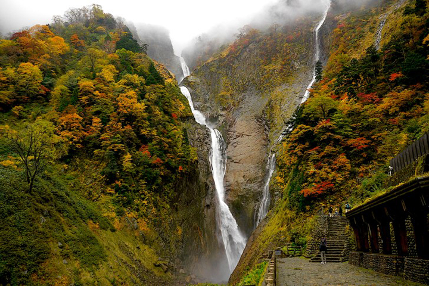
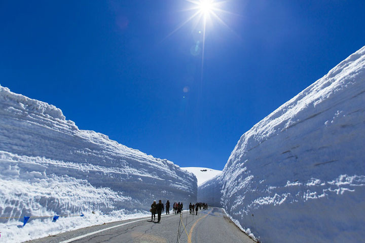
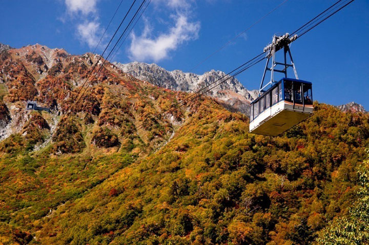
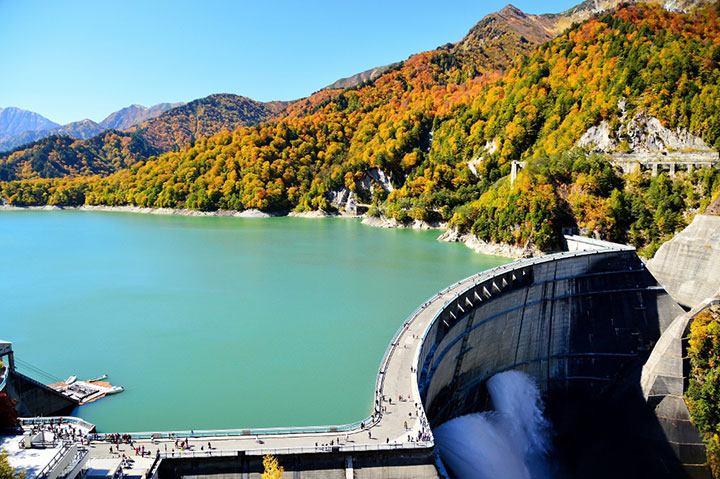

稱名瀑布
稱名瀑布位於富山縣（Toyama）與岐阜縣（Gifu）之間的立山（Tateyama）山區。它是日本落差最大的瀑布並有350米高。在春季當雪融化後，第二瀑布，“罕洛奇瀑布”出現在稱名瀑布右邊。因此可以同時看到兩個瀑布。當水高漲時，甚至會出現第三個瀑布，“Somen”瀑布。因此同時可以看見三個瀑布。 在稱名瀑布前是“滝見台園地”（Takimi Orchard），是一處正面欣賞瀑布的好地方。游客可以很靠近這裡的瀑布而他也是一個推薦的景觀點。在“滝見台園地”的“稱名橋”（Shomyo）上游客們可以看見“稱名瀑布”與“罕洛奇瀑布”（Hannoki）在春季形成一個”V”形。 觀賞稱名瀑布的最佳時間是從五月至十一月。請注意十一月末至四月末道路會因積雪而關閉。
大雪谷
這裡可謂是世界上少數的豪雪地帶。這裏，每年春天來臨之際,為阿爾卑斯山脈路線除雪開通道路時，會形成約500米長的雪墻“大雪谷”。雪墻高度相當於7層建築約20米，氣勢很大，魄力相當。由於道路的一側為步行者開放了通道，所以可以在雪墻間行走，可以充分地欣賞體會這高高聳立的雪墻。即便到遊覽季節即將結束的6月，雪墻的高度還能達到10米左右。
立山架空索道
立山索道全長一千七百米，站與站之間的高低落差為 488 米，不消七分鐘的光景，便走畢全程。日本很多地方都有索道這種交通工具，但立山的這一條卻有其過人之處，它是日本無支柱類別之中，使用最大車廂的空中纜車，絕對可以稱得上是一個可移動的展望台。從車窗望出去，可以眺望到一個似是幻景般的立體自然風光，猶如置身於 3000 米高的群山及黑部湖之中。當秋天來臨時，更可盡覽紅葉遍野的景色，就似是在紅葉海之上乘風破浪一樣。
黑部水庫
用了７個年頭由1,000萬人的努力、在昭和38年完成了的日本最大拱形結構式水庫。那建設被做為時代的大事業而世代流傳。日本第一高、從186m的水庫用驚人的力量帶着煙霧的放水必看！雖然做為立山黑部阿爾卑斯山路線的有名觀光地而被人們知曉、但除了大魄力的放水和、做為巨大建築物的存在感以外、津津有味的黑部水庫插曲和歷史越來越被更多的人了解。試看大自然里日本最大級水庫的盛大感吧。